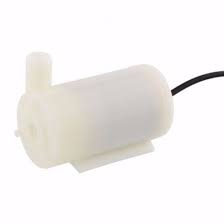
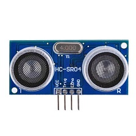
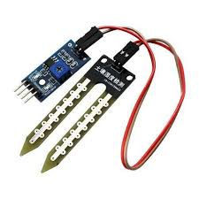
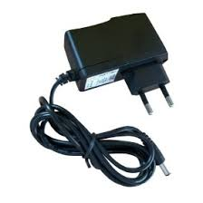
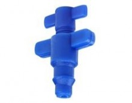
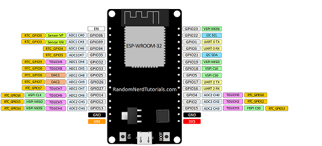

Bombeará água para a planta quando a umidade do solo estiver baixa
Enviará os dados da distãncia eu que a água se encontra do mesmo, para que o Arduino calcule o volume de água no reservatório
Alimentará o circuito caso em caso de falta de eletricidade
Alimentará o circuito caso em caso de falta de eletricidade
Melhor forma de distribuir a água da irrigação
Controla todo o sistema, através dos dados recebidos pelos sensores
Armazenará a água que for escoada pelo solo, para que seja reutilizada nas próximas irrigações